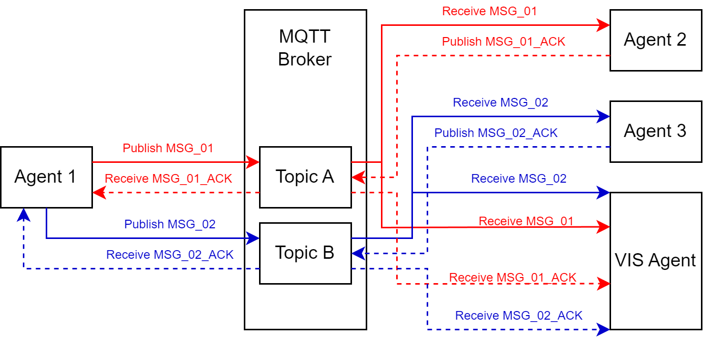
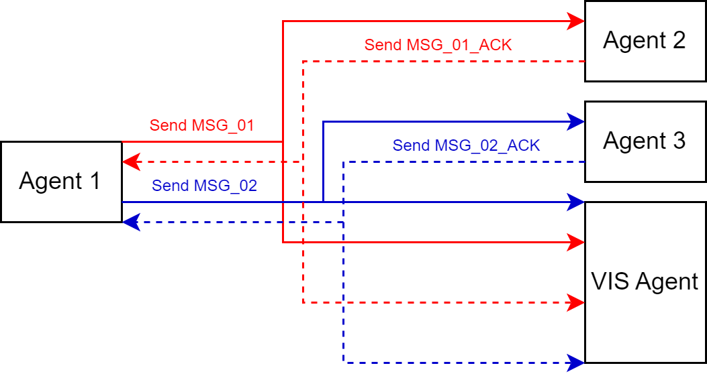
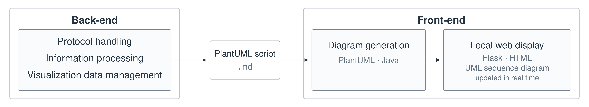
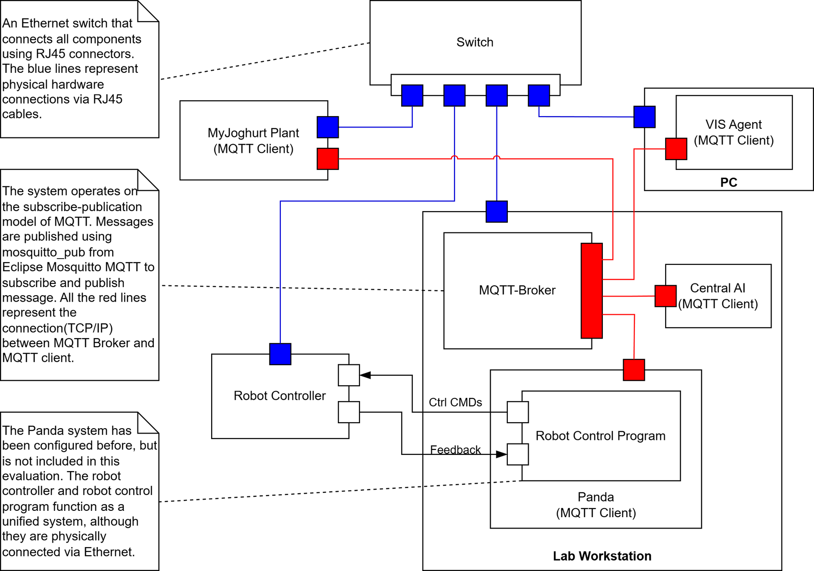
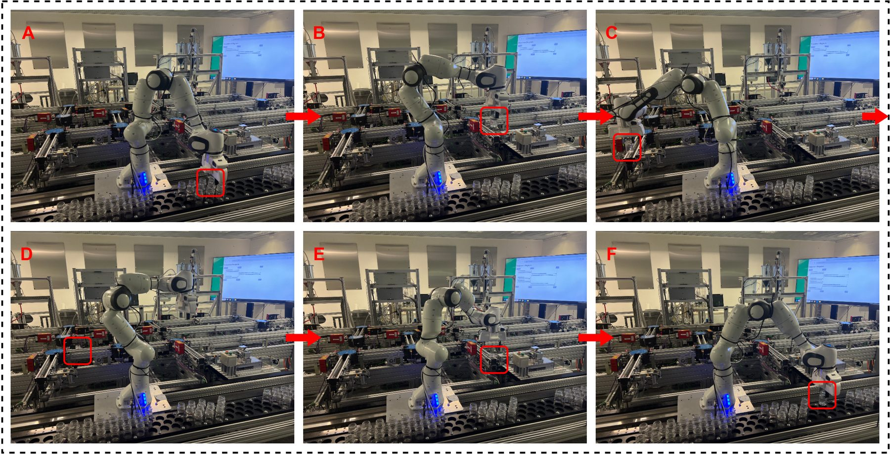
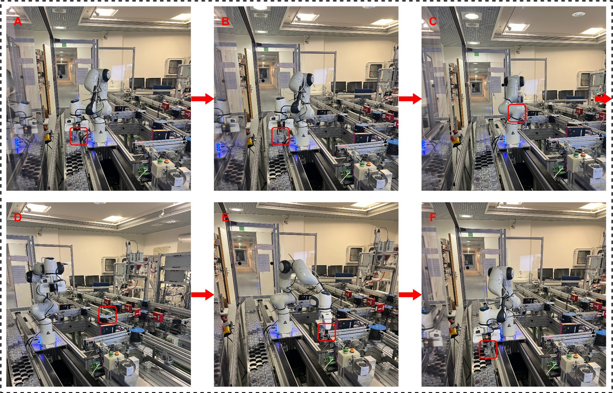
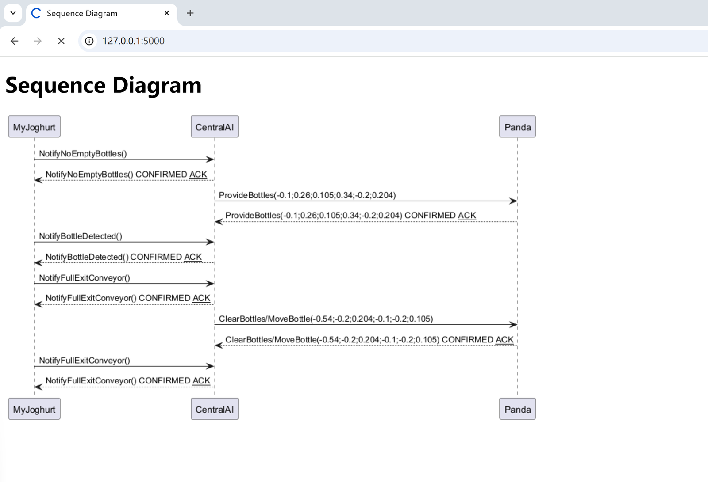

Visualization Platform for Multi-Protocol Agent Communication
TUM Institute of Automation and Information Systems
The objective of this project is to visualize communication in industrial multi-agent systems to support monitoring and debugging. Machines and software agents exchange messages to coordinate production, but separate logs make it difficult to understand who communicates with whom and what messages they exchange. This is a sub-project that serves MyJoghurt.
I developed a Python back-end with a visualization agent (VIS Agent) that collects MQTT messages by subscribing to relevant topics and receives copies of UDP messages. It extracts the sender, receiver, and message content, then converts this information into PlantUML instructions. These instructions are saved in a file, allowing the diagrams to be generated again for later analysis.


For the front-end, I found that Sequence Diagrams in systems engineering are well-suited to engineers' reading habits and are convenient for monitoring and debugging. I built a Flask web application that reads the saved instructions, uses PlantUML to generate UML sequence diagrams, and displays them in a browser. The page refreshes automatically to show new messages. Commands, acknowledgments, and UDP emergency messages are visually distinguished.

I tested both protocols with virtual agents and then evaluated the MQTT-based visualization on the physical MyJoghurt demonstrator.

This showed that the platform could capture and display agent communication in a laboratory production setup. The platform helps engineers connect system behavior with exchanged messages and inspect interactions between components.



Many thanks to Prof. Dr.-Ing. Birgit Vogel-Heuser for giving me this opportunity, and to Josua Höfgen, M.Sc. for his guidance on this project.